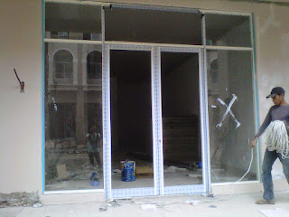
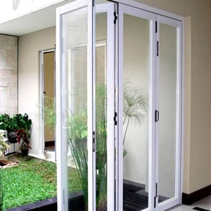

Kaca yaitu kebutuhan yang krusial bagi sebuah industry maupun gedung. Kaca semakin melengkapi bangunan supaya nampak lebih cantik dan mempunyai nilai keindahan bila di pandang orang. Banyak tipe dari kaca yang dapat di gunakan untuk banguan ataupun rumah tinggal.
Tak kaca tempered, kaca shower, kanopi kaca, parket kayu jati dan masih banyak lagi. Tiap-tiap kaca memiliki fungsi masing-masing yang membikin banyak orang kian mebutuhkannya dari hari ke hari. Berikut ini sedikit ulasan mengenai kaca bagi sebuah banguanan, fungsi utama dan bagaiman memilih kaca yang cocok untuk sebuah hunian bagus rumah, kantor maupun gedung. Akan di jelaskan juga mengenai lantai kayu jati terbaik yang bisa anda beli.
Jual Kaca Cermin di Pacitan

Anda bisa mempunyai pintu dengan bahan berupa kaca cermin Pacitan. Banyak produsen kaca cermin Pacitan yang membikin dengan desain yang berbeda. Bahkan, ada juga desain kaca cermin Pacitan yang unik. Tak saja, memang kesan minimalis nampak dari cermin dengan format persegi atau persegi panjang. Jika itu, kadang kala cerminnya tak ada bingkainya atau yang sering kali disebut dengan kaca cermin Pacitan frameless.
Anda juga dapat tentukan apakah berharap memiliki cermin yang memiliki frame atau tidak. Bahkan, Anda bisa pakai kaca cermin Pacitan ini sekalian sebagai material utama, seperti sebagai pintu lemari di kamar tidur Anda. Pun, ada juga furniture berupa pintu yang terbuat dari kaca cermin Pacitan. Atau barangkali Anda mengharapkan kaca cermin Pacitan yang seketika dapat dilekatkan pada komponen furniture tertentu seperti pintu lemari. Tidak contoh lemari pakaian di mana bagian pintunya terbuat dari kaca cermin Pacitan. Atau Anda bisa buat pintu kaca cermin Pacitan. Tersedia kaca tempered Pacitan dengan beragam ukuran yang dapat anda pesan di dis.or.id. Tetapi, Anda dapat memperhatikan orang lain dari dalam rumah. Tidak anda beratensi untuk mempunyai kaca tempered Pacitan bagus sebagai pemanis ruangan atau sebagai pintu, anda bisa seketika mengunjungi dis.or.id.
Info Pemesanan Selengkapnya
Google Maps: https://www.google.com/maps/d/u/0/viewer?mid=1HNPQwTg5M-VmcXHvNbVncTuxY7ALbdIQ&ll=-7.27380280025364%2C112.65243155000007&z=18
Note: https://www.facebook.com/notes/distributor-of-industrial-supply/pabrik-supplier-kaca-cermin/1785720801727799/
Event: https://www.facebook.com/events/135275393812568/
Distributor & Supplier Pintu Kaca

Ada banyak desain pintu kaca yang bisa kita temui seperti pintu kaca berbentuk sliding (geser) atau folding (lipat). Tersedia juga almunium dan kayu jika Anda berkeinginan mempunyai pintu kaca dengan pigura. Sekarang hal yang demikian bisa terbuat dari kayu atau aluminum. Tersedia sebagian tipe kaca dengan kualitas yang terbaik, mulai dari kaca tempered sampai yang non-tempered. sebagian ragam kaca yang paling kerap kali diterapkan untuk membikin pintu kaca, mulai dari macam kaca tempered sampai kaca non-tempered. Sekarang paling banyak diminati saat ini adalah kaca tempered sebab jauh lebih kuat dan tahan lama.
Anda dapat mendapatkan pintu kaca yang dibutuhkan dengan mangunjungi dis.or.id.
Dis.or.id juga menyiapkan sebagian variasi kaca dengan ketebalan yang berbeda. Dis.or.id mempunyai daya yang sudah amat profesional di bidang ini. Untuk budget yang lebih sedikit, Anda bisa memilih macam kaca non-tempered.
Jasa Pemasangan Railing Kaca

Railing kaca menjadi salah satu bagian yang akan membuat terlihat benar-benar minimalis. Tak rumah Anda sudah dibangun dengan desain minimalis, karenanya tak salah saat railing, entah itu railing tangga dan balkon terbuat dari kaca. Kecuali ini disebabkan semakin banyak permintaan terhadap railing ini. Pemilik rumah berkeinginan sekali mempunyai interior yang semacam itu minimalis. Dan kaca ini bisa Anda pakai sebagai bahan untuk membikin kaca railing.
Anda bisa memilih kaca dengan kualitas terbaik. Anda dapat pertimbangkan untuk mengaplikasikan kaca tempered. Kalau itu, kaca ini dapat pecah tapi tak memunculkan pecahan yang runcing melainkan pecahan kecil-kecil dan lembut. Dikatakan benar-benar aman lantaran kaca tempered tidak memunculkan pecahan yang runcing ketika tiba-tiba kaca pecah entah itu pengaruh kecelakaan atau petaka seperti gempa. Seandainya kaca, observasi juga aluminum yang menjadi framenya. Ini memutuskan kuatnya konstruksi railing kaca. Apabila memberikan kesan minimalis pada interior rumah, ini juga membikin rumah Anda kelihatan lebih nyaman untuk dibuat tempat tinggal.
Harga yang sangat ekonomis serta mutu terbaik yang sudah terjamin membuat anda tak akan menyesal membeli railing kaca di dis.or.id.
Distributor, Supplier & Jasa Pasang Kanopi Kaca
Diantaraya yakni kaca tempered 8 mm, kaca tempered 10 mm clear, kaca tempered 12 mm clear, kaca laminated 12 mm clear, kaca laminated 5 mm + 5 mm clear non tempered kaca, kaca laminated 5 mm + 5 mm tempered clear dan masih banyak lagi. Canopy kaca dengan atap kaca memang sebuah bangunan yang asangat elgan untuk jaman modern seperti kini ini dengan harga yang benar-benar lumayan sekiranya di bandingkan kanopi atap awam. Cara ini memang desain shower berbahan kaca memang lebih banyak diterapkan daripada desain shower berbahan tirai. Ada sebagian alasan kenapa Pintu Kaca Shower banyak diaplikasikan salah satunya merupakan kaca lebih kelihatan bersih dan rapi dan juga lebih mudah dalam perawatannya. Sekiranya tembus pandang, kaca menyerap sinar yang masuk sehingga kian tebal kaca karenanya semakin sedikit cahaya yang dapat melaluinya, karenanya sifat transparannya makin berkurang.
Kini anda bisa menerima kanopi kaca dengan mutu terbaik dan juga berkwalitas di dis.or.id. Selain disana anda dapat menerima penawaran mengenai jasa pemasanga kanopi kaca. Dis.or.id juga menyediakan jasa pemasangan kanopi kaca yang tentunya dengan bantuan tenaga professional yang sudah berpengalaman. Bila fungsi utama kanopi sebagai pelindung untuk bangunan hal yang demikian, pemasangan kanopi kaca juga dapat membuat bangunan menjadi nampak lebih menawan dan menarik, apalagi mengaplikasikan konsep yang sama dengan konsep rumah minimalis. Sesudah kaca untuk atap kanopi cukup digemari. Tidak anda sedang mencari kanopi kaca, anda bisa seketika mengunjungi dis.or.id.
Distributor & Supplier Kaca Shower

Seluruh orang pasti berharap punya kamar mandi yang kondisinya senantiasa bersih sehingga bisa terasa lebih nyaman ketika digunakan. Salah satu cara yang dapat diaplikasikan untuk menghasilkan kamar mandi yang senantiasa bersih merupakan memakai shower sebab metode pembersihannya memang jauh lebih praktis dibanding dengan yang mengaplikasikan konsep bak mandi. Kelebihan shower screen dibanding dengan sistem penyekatan yang lain yakni diciptakan dalam format yang sudah jadi dan tinggal dipasang saja. Jika pemasangannya juga betul-betul gampang dijalankan dan tidak membutuhkan waktu yang lama. Kelebihan shower screen dibanding dengan sistem penyekatan yang lain yaitu dihasilkan dalam format yang sudah jadi dan tinggal dipasang saja.
Disana tersedi kaca shower dengan berjenis-jenis ukuran dan juga harga yang juga cukup relatif murah.
Distributor, Supplier & Jasa Pasang Kanopi Kaca

Pintu Kaca Shower pada kamar mandi ialah salah satu opsi yang baik untuk desain interior kamar mandi modern. Seiring dengan perkembangan zaman di dunia properti, sekarang kanopi kaca terlah berkembang pesat mengikuti arsitektur modern . Tidak hanya sekedar tembus pandang. Disinilah letak perbedaan optis yang utama antara akrilik (acrylic) dengan kaca. Apabila tembus pandang, kaca menyerap sinar yang masuk sehingga kian tebal kaca karenanya kian sedikit sinar yang bisa melaluinya, karenanya sifat transparannya makin berkurang.|Di samping pintu kaca shower akan membikin kamar mandi kecil nampak lebih besar. Pada atap akrilik, penyerapan sinar yang terjadi demikian kecil sehingga padahal ketebalannya bertambah, sifat transparannya tidak banyak berubah.
Tidak anda saat ini sedang memerlukan kanopi kaca, anda dapat seketika mengunjungi dis.or.id. Harga untuk tiap-tiap pemasangan pun pelbagai sesuai dengan kebutuhan anda. Anda juga bisa memenfaatkan jasa pemasangan atap kanopi kaca dengan seluruh ragam kaca yang anda butuhkan yang pantas dengan kriteria atap kanopi. Banyak bangunan seperti gedung perkantoran, perumahan, ruko dan apartement yang mengaplikasikan kanopi kaca tempered. Sesudah kaca untuk atap kanopi cukup digemari.
Jasa Maintenance Kaca

Jasa maintenance kaca menawarkan pelayanan perawatan bahan bangunan yang terbuat dari kaca. Salah satunya pelayanan berupa pembersihan gedung yang terbuat dari kaca. Dis.or.id mempunyai energi ahli yang bisa kapabel membersihkan gedung pencakar langit yang bangunannya terbuat dari kaca. Membersihkan bagian kaca gedung Anda yang mungkin rusak, pecah, atau mengalami dilema lainnya.
Lebih dari itu, Jikalau spesialis yang dimilik oleh dis.or.id juga dapat membenarkan kaca yang rusak.
Dis.or.id yaitu perusahaan jasa di bidang maintenance kaca gedung dengan memberikan sebagian pelayanan. Salah satunya pelayanan berupa pembersihan kaca dengan memakai alat pembersih yang bisa membuat kaca gedung Anda kelihatan bersih seperti sediakala. Tersedia alat pendukung supaya semua sisi gedung yang terbuat dari kaca bisa dipastikan seluruh sisi gedung dapat di bersihkan. Untuk itu, alat-alat sepatutnya lengkap sehingga kami mampu membersihkan semua sudut gedung. Oleh karena itu, dis.or.id cuma memilih orang-orang yang sungguh-sungguh profesional dan telah mempunyai pengalaman dalam hal maintenance kaca. Selain hanya dalam hal membersihkan kaca, mereka juga kapabel melaksanakan perbaikan serta penggantian kaca yang mengalami kerusakan.
Jasa Pemasangan Kaca Tempered
Tidak yang telah di kenal bahwa jasa pemasangan kaca tempered hanya dilaksanakan oleh orang yang profesional. Selain ini disebabkan bahan ini bukan macam kaca lazim. Dis.or.id mempunyai seluruh daya ahli yang di rekrut hanya mereka yang profesional yang tahu persis bagaimana metode menerapkan alat dan bagaimana membersihkan kaca gedung bertingkat.
Jikalau itu, pelbagai komponen properti akan kian menarik apabila dibuat dari kaca tempered seperti kanopi, pintu, kamar mandi, dan balkon.
Namun, pemasangan kaca tempered ini harus ekstra hati-hati. Bukan sembarang alat yang dipakai untuk memotong kaca tempered layak dengan keperluan. Tak saat ini anda sedang ingin membangun suatu bangunan atau gedung, anda bisa memanfaatkan kaca tempered untuk diterapkan lantas ke segala tipe bidang. Anda bisa segera mengunjungi dis.or.id untuk menerima berita mengenai jasa pemasangan kaca tempered, memakai kaca tempered dan pastinya hasil yang dikasih malah akan cocok dengan apa yang Anda inginkan.
Distributor & Supplier Pintu Lipat Kaca

Pastinya anda telah mengetahui banyak kelebihan dari kaca tempered.Secara umum, kaca dibagi menjadi 6 macam, merupakan kaca jernih, kacang berwarna atau tinted glass, kaca es, kaca cermin atau one way glass, kaca laminasi, dan yang terakhir kaca tempered. Variasi kaca nomor 6 ini amat direkomendasikan untuk diwujudkan sebagai bahan membuat pintu lipat kaca.
Ukuran kaca menjadi faktor penentu berapa harga pintu kaca lipat yang Anda inginkan. Pastikan Anda memilih kaca tempered mutu terbaik agar pintu lipat yang Anda pesan bisa diaplikasikan dalam kurun waktu yang betul-betul lama. Kini, banyak kantor yang tidak lagi memiliki ruangan yang disekat dengan tembok dan saat ini beralih dengan ruangan disekat dengan mengaplikasikan kaca.
Jasa Pemasangan Kubikel Toilet
Apabila anda mengininkan toilet yang layaknya mall maupun hotel, ada pantasnya anda menerapkan kubikel WC. Kubikel toilet bisa di pakai di kamar mandi mall.
Dengan menggunakan WC kubikel tentnya kamar kecil yang anda miliki Terlihat lebih elegan dan mewan jauh dari kesan dekil. Kalau anda sedang memerlukan kubikel kamar kecil, anda dapat segera mengunjungi laman dis.or.id. Sebab disana terdapat kubikel toilet dengan berbagai ukuran serta ketebalan kaca.
Harga yang ditawarkan malah cukup relatif murah.
Justru embun bisa menempel di kaca dan lambat laun bisa membuat kaca tidak sejernih semula. Apabila anda ketika ini sedang membutuhkan kaca shower untuk kamar mandi, seketika saja kunjungi dis.or.id untuk melakukakn pengorderan ataupun menanyakan detil harga dari kaca shower.
Distributor & Supplier Partisi Kaca
Partisi kaca telah digunakan dimana saja. Tak hanya sebagai pembatas di mall, hotel, atau kantor-kantor saja, tetapi juga dipakai sebagai sekat ruangan di rumah hunian. Anda bandingkan sendiri berapa biaya yang Anda wajib siapkan untuk partisi tembok. Anda wajib beli batu bata, pasir, dan semen. tertentu seperti kamar mandi dalam atau taman dalam ruang yang lazimnya terdapat di tengah atau belakang rumah mengaplikasikan pembatas berupa partisi kaca. Anda bisa menghitung sendiri berapa uang yang sepatutnya Anda siapkan untuk membeli bahan untuk partisi tembok. Anda dapat meniru mereka. , Anda seharusnya tahu ada desain yang berbeda. Ada partisi kaca frameless atau tanpa bingkai dan partisi dengan . Anda sepatutnya tahu ada kaca transparan, semi transparan dan kaca yang sama sekali transparan yang kerap kali disebut dengan kaca tempered Pacitan. juga dengan jenis kaca. Sebab jenis kaca ini privacy ruangan yang disekat. Ada kaca transparan, semi transparan, dan juga kaca cemin yang membuat ruangan privat. Seandainya anda sedang mencari distributor dan supplier partisi kaca yang kaca dengan terbaik, anda tinggal mengunjungi dis.or.id.